Ørslev
Höhe ohne Sockel: 24 cm
mit Sockel: 89 cm
Durchmesser: 59 cm
Wandstärke: 2 cm

83 - Ørslev - Letztes Update 10.10.2025
Navi-Daten: 55.40551 9.91355 - oder: DK-5592 Ejby, Tellerupvej 8
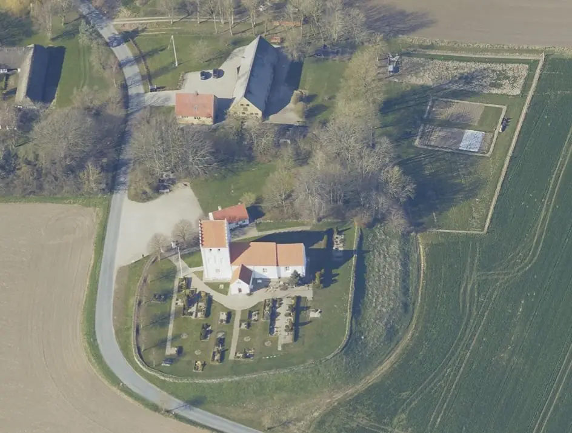
Über Skråfoto kann man sich u.a. dieses Luftbild der Ørslev Kirche vom 16.04.2021 abrufen. Skråfoto ist eine Webanwendung, die von Klimadatastyrelsen weltweit kostenlos bereitgestellt wird - Lizenz: CC BY 4.0. Die Aufnahmen werden seit 2017 alle zwei Jahre erneuert und neben einer Senkrechtaufnahme wird ein Schrägbild aus jeder Himmelsrichtung angeboten, das man über eine Adresssuche aufrufen kann.
Die Kirche Ørslev ist eine typische mittelalterliche Dorfkirche auf Fünen. Der ursprünglich romanische Teil der Kirche, der nach Osten gekehrte Chor und das Schiff wurden um 1200 aus großen Backsteinen aufgebaut. Im Spätmittelalter bekam die Kirche Turm und Vorhalle und der Kirchenraum bekam ein gotisches Kreuzgewölbe. Diese Kirche wirbt für sich als sog. "Offene Wegkirche" was bedeutet, dass sie täglich von Montag bis Freitag von 08.00 bis 18.00 Uhr geöffnet ist.
In der Kirche von Ørslev findet sich ein recht interessantes Stück aus der Wikingerzeit: das vermutlich älteste Taufbecken Dänemarks aus norwegischem Speckstein. Es wurde aber keineswegs ursprünglich als Taufbecken benutzt, sondern wahrscheinlich als großer Haushaltskessel für die Zubereitung von Suppen und Eintöpfen. Große Schalen und Kessel dieser Art waren bei den Wikingerfrauen hochbeliebt, freilich auch kostbar, da es sich um Exportartikel aus Norwegen handelte, so dass sich nur wohlhabende Familien solch ein Stück leisten konnten. Wie die gut erhaltene Schale von Ørslev in die Kirche und zu ihrer heutigen Funktion kam, ist unbekannt. Vielleicht wurde es aus dem Kleinen Belt gefischt.
Fotos von meinem letzten Besuch am Samstag, 27.08.2016 - vergrößerte Darstellung nach Mausklick auf das jeweilige Foto:
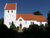 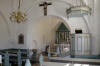 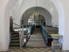 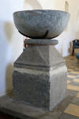 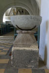 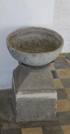


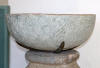 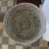 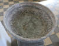


Literaturhinweis: Wolfram zu Mondfeld: Wikingfahrt. Kulturreiseführer Dänemark · Norwegen · Schweden, Herford 1985, S. 136
Auf der Webseite von "Museum Odense" kann man einen dänischsprachigen Artikel zur Taufbecken vom 01.01.1956, von Olaf Heymann Olsen (*07.06.1928 17.11.2015, dänischer Historiker und Archäologe - Todesanzeige)
 Bildquelle:
Wikipedia - Lizenz:
CC-BY-SA
Bildquelle:
Wikipedia - Lizenz:
CC-BY-SA
abrufen, der ursprünglich im Museums Jahrbuch 1956 "Fynske Minder" (S.195-202) erschien.
Übersetzt lautet der Artikel (etwas von mir verkürzt / Verlinkungen von mir eingefügt):
"Von allen Einrichtungsgegenständen unserer alten Dorfkirchen ist das Taufbecken zweifellos das treueste. Während alle anderen Einrichtungsgegenstände im Laufe der Zeit ersetzt und erneuert wurden, ist das Taufbecken in der Regel ungefähr so alt wie die Kirche selbst. In 1300 Kirchen gibt es noch romanische Taufbecken aus Granit. Viele dieser 800 Jahre alten Steinmetzarbeiten sind wunderschöne und einzigartige Kunstwerke, und zusammen mit den jüdischen Granitportalen und den goldenen Altären ist das Granittaufbecken die bedeutendste künstlerische Manifestation der Valdemar-Zeit. Zu den Granitbecken, die alle eine inländische Arbeit sind, gesellt sich noch eine Gruppe von etwa hundert importierten Taufbecken, fast alle aus dem großen Werkstätten auf Gotland, das im 13. und 14. Jahrhundert eine bedeutende Rolle spielte.
Nicht zuletzt aufgrund ihrer massiven Beschaffenheit haben diese alten Steintaufbecken den Angriffen späterer Zeiten standgehalten. Es kommt oft vor, dass man in ländlichen Kirchen auf schmiedeeiserne Taufbecken und wunderschön geschnitzte hölzerne Taufbecken aus der Renaissance oder auf Taufengel aus der Zeit des Barock und Klassizismus stößt. Und hier und da drückte sich die große Leidenschaft des letzten Jahrhunderts für mittelalterliche Stile in einem neoromanischen Taufbecken aus Sandstein aus, das mit geometrischer Präzision geformt und geschnitzt wurde und daher normalerweise todlangweilig war. Aber wie gesagt, das sind nur Ausnahmen. Die große Mehrheit der Taufbecken sind noch mittelalterlich.
Das Taufbecken in der Ørslev-Kirche, ein paar Meilen südöstlich von Middelfart, wirkt auf den ersten Blick wie ein schlecht behauenes und schlecht proportioniertes Granitbecken. Schaut man jedoch genauer hin und betrachtet die große, schwere Messingschale, die das unscheinbare Taufbecken wie einen viel zu großen Hut bedeckt, erkennt man schnell, dass das Taufbecken durch das Zusammenfügen von Teilen aus ganz unterschiedlichen Zeiten entstanden ist.
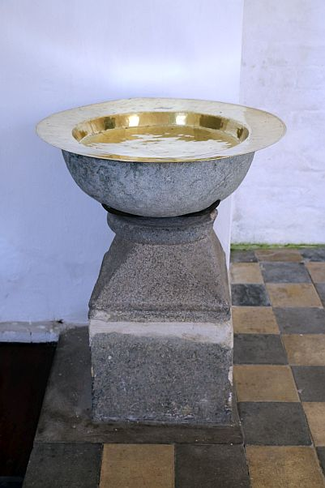

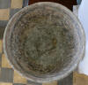
Eigene Fotos vom 27.08.2016Der Fuß des Beckens, der auf den ersten Blick wie ein Granitblock aussieht, ist in Wirklichkeit ein polierter Mönchssteinblock, dessen Granitschliff einem geschickten Maurer zu verdanken ist. Auf diesen Block ist mit der Oberseite nach unten ein echtes Stück Granit aufgesetzt, ein wohlgeformtes romanisches Trapezkapitell, das ursprünglich möglicherweise als Säulenkopf für einen Gewölbepfeiler oder eine Portalsäule in einem frühmittelalterlichen Gebäude gedient hat. Das Kapitell kann nicht von der Ørslev-Kirche selbst stammen, wo sich ein spätromanisches Mönchssteingebäude befindet, und es muss davon ausgegangen werden, dass es irgendwann einer der heruntergekommenen Kirchen oder Burganlagen in der Gegend entnommen wurde.
Es handelt sich um ein
niedriges, etwa halbkugelförmiges Gefäß mit einem Durchmesser von
5959,5 cm und einer Höhe von nur 23 cm.
Das Becken ist recht dünnwandig, 2-2,5
cm, und so leicht, dass man es ohne große
Schwierigkeiten vom Fuß heben kann. Es besteht auch nicht aus Granit, sondern
aus norwegischem Speckstein. Speckstein (auch
Steatit, Lavezstein, Talcusstein, Seifenstein genannt) ist eine
Gesteinsart, die nicht in Dänemark, aber an vielen Orten in
Norwegen in erheblichen Mengen vorkommt. Aufgrund seines
Gehalts an Talk und Chlor ist der Stein so weich, dass er aus dem Gestein gesägt
oder herausgeschnitten und mit einem Messer bearbeitet werden kann. Da er
außerdem äußerst witterungsbeständig ist, wurde er in Norwegen
häufig als Baumaterial verwendet, insbesondere dort, wo feinere
dekorative Details gestaltet werden sollten. Viele der norwegischen
Prachtbauten des Mittelalters u.a. der berühmte
Nidarosdom
sind größtenteils aus Speckstein gebaut.
Der leicht zu
bearbeitende Stein, der meist in den Farben weiß, violett, rosa, grün, grau,
schwarz, braun und blau vorkommt, wurde bereits in der Steinzeit von
Menschen genutzt. Die ersten Siedler
Norwegens verwendeten ihn für Äxte und Keulen, und als
Bronze in Gebrauch kam, entdeckte man schnell, dass man aus dem
Speckstein
Formen herstellen konnte, der neben seinen anderen Vorteilen auch feuerfest ist.
In der Eisenzeit begannen die Menschen, Kochtöpfe aus dem Stein
herzustellen. Es erwies sich dafür als besonders geeignet und das Specksteinzeug
fand bald weite Verbreitung. Während der Wikingerzeit
verdrängten sie den Ton in Norwegen fast vollständig.
Die überwiegende Mehrheit des norwegischen Speckstein aus der Wikingerzeit ist von ein und demselben Typ. Es gibt niedrige, halbkugelförmige Gefäße ohne eigentliche Bodenplatte. Sie haben in der Regel ein schön geglättetes Äußeres, aber ein rauh behandeltes Inneres, wo oft durch schräges Ziehen von mehr oder weniger tiefen, parallelen Schnitten Spuren des Meißels entstehen, mit dem die Steine ausgehöhlt wurden.
Diese charakteristischen
Merkmale die Halbkugelform sowie die polierte Außenseite und die Rippung auf
der Innenseite finden wir auf dem Taufbecken in der
Ørslev-Kirche wieder, und es besteht kein Zweifel daran, dass dieses in
engem Zusammenhang mit den Haushaltsgefäßen der
Wikingerzeit stand. Eine nur annähernd genaue Datierung des
Stücks ist aber leider nicht möglich. Gefäße dieses einfachen Typs
waren während der gesamten Wikingerzeit im Einsatz. In
Norwegen kommen sie in einzelnen Exemplaren bereits in Gräbern
aus dem 8. Jahrhundert vor, besonders häufig traten sie jedoch
in der jüngeren und jüngsten Wikingerzeit auf,
also im 9. Jahrhundert bis ins 11. Jahrhundert. Andererseits
waren sie in historischen Zeiten nicht bekannt. Die mittelalterlichen
Rundspecksteine haben steilere, oft völlig senkrechte Seiten und abgeflachte
Ränder.
In Dänemark waren Töpfe mit norwegischem Speckstein aus einigen
Gräbern aus der Wikingerzeit bekannt, und bei den großen Ausgrabungen von
Siedlungen und Burgen aus der Wikingerzeit, die in den letzten Jahren
durchgeführt wurden (Trelleborg,
Aggersborg,
Fyrkat und
Lindholm Høje), wurden
Tonscherben von Speckstein in so großer Zahl gefunden , dass man davon ausgehen
kann, dass es einen besonders bedeutenden Import dieser Ware gegeben hat.
Dieser Import scheint jedoch streng auf die Wikingerzeit beschränkt zu sein.
Auffällig ist jedenfalls, dass Speckstein in Funden aus dem
dänischen
Mittelalter fast vollständig fehlt. Was auch immer der Grund sein mag,
irgendwann im 11. Jahrhundert wurde die Einfuhr von
Speckstein nach Dänemark wie
durch Zauberei gestoppt.
Es wäre daher kaum unangemessen zu behaupten, dass das Taufbecken in Ørslev mindestens vor dem Jahr 1100 hergestellt und aus Norwegen exportiert worden sein muss. Die Kirche in Ørslev wurde jedoch vermutlich erst um 1200 erbaut, und von daher hat die Schale natürlich mindestens 100 Jahre vielleicht sogar noch viel Jahre länger existiert, bevor sie in der Kirche in Ørslev untergebracht wurde. Unter anderem stellt sich natürlich die Frage, ob das Gefäß ursprünglich für diesen heiligen Zweck bestimmt war. Chronologisch stünde hier nichts mehr im Wege. Sowohl Dänemark als auch ein großer Teil Norwegens wurden im 9. Jahrhundert christianisiert, also zu einer Zeit, als Specksteingefäße in den nordischen Ländern allgemein verwendet wurden, und das Gefäß könnte daher durchaus in einer der Stabkirchen oder Missionskapellen gestanden haben, aber dazu wissen wir zu wenig.
Unser Wissen über die Vorläufer des romanischen Taufbeckens beschränkt sich auf die berühmte Darstellung von Harald Blauzahns Taufe auf dem goldenen Altar der Kirche von Tamdrup aus der Zeit um 1200. Hier erhält der König seine Taufe in einer Tonne, einer einfachen Zimmermannsarbeit. Und da keine weiteren vorromanischen Taufbecken erhalten sind, können wir wohl davon ausgehen, dass sie aus Holz gefertigt waren. Aber deshalb kann es durchaus sein, dass hier und da ein Specksteinstück zwischen ihnen lag.
Dennoch kann bezweifelt werden, dass das Ørslev-Becken schon immer ein Taufbecken war. Im Mittelalter erfolgte die Taufe nicht wie heute durch Taufbecken, sondern durch Eintauchen des Kindes in das Taufbecken. Wenn man absolut sicher sein wollte, dass der Teufel vollständig vertrieben war, musste das Kind vollständig vom geweihten Taufwasser umgeben sein. Streck einfach einen Finger oder einen Zeh raus, der Teufel könnte noch da sein und die Taufe war umsonst. Die romanischen Granittaufbecken weisen daher fast immer sehr tiefe Tröge mit flachem Rand auf. Aber im kleinen Ørslevbecken kommt man nur ca. 18 cm Wasserstandshöhe. Dies ist zu wenig, um ein effizientes Eintauchen in das halbkugelförmige Gefäß zu ermöglichen, und allein aus diesem Grund muss bezweifelt werden, dass diese Schale von Anfang an als Taufbecken gedacht war.
Allerdings ist Ørslev-Becken auch nichts ganz Gewöhnliches. Dafür ist es zu groß. Soweit mir bekannt ist, gibt es kein erhaltenes Specksteinzeug aus der Wikingerzeit, das in der Größe mit diesem Gefäß mithalten könnte. Die Mehrheit der 463 Specksteingefäße, laut Jan Greve Thaulow Petersen (*20.10.1887 - 03.03.1967, norwegischer Archäologe)
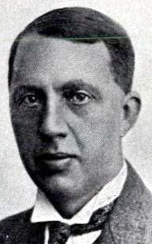
Bildquelle: Wikipedia - Lizenz: Public Domainist in norwegischen Museen mit einem Durchmesser zwischen 20 und 30 cm zu finden. Nur 40 sind größer als 30 cm und nur 3 sind über 40 cm. Das größte ist eine wunderschöne Halbkugel, die zusammen mit vier anderen in Landvik in Aust-Agder gefunden wurde. Es hat einen Durchmesser von 46 cm und ist damit etwas kleiner als die 59 cm des Ørslev-Beckens.
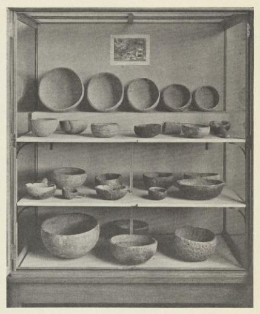
Bildquelle: Sigurd Grieg - Norske kleberstensbrudd fra vikingetiden - Seite 103 - Specksteingefäßfunde in Universitetets Oldsaksamling in OsloEin Trog dieser Größe stellte natürlich einen beträchtlichen Wert dar, und auch mehrere der größten norwegischen Specksteingefäße wurden unter Umständen gefunden, die darauf hindeuten könnten, dass sie in Friedenszeiten versteckt worden waren. Über den Einsatz der großen Tröge liegen uns keine gesicherten Erkenntnisse vor. Sie können im Haushalt zur Essenszubereitung, als Bierschale oder als Vorratsbehälter verwendet werden. Und es liegt wohl auch nahe, anzunehmen, dass einige von ihnen als Opferbrennholz im Hof des Großbauern gedient haben könnten.
Wurde das Ørslev-Becken beim Glaubenswechsel vom Hof zur Kirche getragen, um dort dem neuen Gott zu dienen? Ist vor dem Weihwasser der Taufe Blut aus heidnischen Opfern in das Gefäß geflossen? Es ist ein faszinierender Gedanke, den man nicht völlig ablehnen, den man aber auch nicht völlig akzeptieren kann. Es ist keineswegs selbstverständlich, dass das Specksteingefäß bereits bei seinem Bau in die Kirche gelangte. Wie bereits erwähnt ist der Trog im Mittelalter nicht mehr für die Kindertaufe geeignet. Darüber hinaus ist der seltsame, gegliederte Fuß des Taufbeckens möglicherweise nicht mittelalterlich er ist ohnehin kaum romanisch. Der Taufstein wurde kurz nach der Reformation von der Eingangstür, wo er nach katholischem Brauch gestanden haben muss, entfernt. Als Bischof Jacob Madsen 1589 die Kirche besuchte, fand er das Taufbecken das er leider nicht beschreibt im Chor stehen.
In der Nachbarkirche von Ørslev, in Føns, gibt es ein wunderschönes kleines romanisches Taufbecken aus Granit. Doch auf dem Platz vor der Kirche liegen die fragmentierten Überreste eines weiteren romanischen Taufbeckens aus Granit. Dass beide ursprünglich in der Kirche standen, ist nicht vorstellbar. Eines davon muss aus einer anderen Kirche stammen und diese andere Kirche könnte durchaus Ørslev gewesen sein. Auf jeden Fall kann man davon ausgehen, dass das Specksteingefäß so spät nach Ørslev gelangte, dass es ein weiteres steinernes Taufbecken aus der Kirche verdrängt hat, wenn überhaupt dafür eine Möglichkeit bestand. Man könnte sich zum Beispiel vorstellen, dass es bei Erdarbeiten oder dem Ausheben eines Grabhügels im Boden gefunden wurde. Wir können diese Möglichkeit sicherlich ignorieren. Unter solchen Umständen hätte ein so großes und relativ zerbrechliches Stück kaum eine Chance, in einem Stück geborgen zu werden. In der Erde gefundene Specksteine kommen überhaupt nur sehr selten vor.
Dennoch gibt es in mehreren dänischen Museen Specksteinstücke, die ebenso gut erhalten sind wie das Ørslev-Becken. Im Nationalmuseum werden auch zwei Specksteinschalen aufbewahrt. Zwei ähnliche Specksteingefäße im Randers Museum wurden am Strand von Sødringholm gefunden, wo sie mit Algen überwuchert an Land gespült wurden. Im Grenå-Museum gibt es einen ungewöhnlich schönen, hohen Speckstein, der sich unter dem Öffnung wölbt und einen Durchmesser von nicht weniger als 41 cm erreicht. Nicht weit von hier, außerhalb von Katholm auf Djursland, hat ein Felsenfischer aus Lolland kürzlich einen weiteren großen Trog aus Speckstein gefunden.
Diese Tröge müssen von
Handelsschiffen aus Norwegen über Bord gespült oder an ihnen festgemacht worden
sein. Sie zeugen von der Intensität des norwegischen Specksteinexports in der
Wikingerzeit und zeigen zusammen mit einer Reihe anderer
Strand- und Meeresfunde, dass eine wichtige Handelsroute entlang der Ostküste
Jütlands verlief. Die niedrigen, schwer beladenen Handelsschiffe mieden das Meer
und segelten lieber in Lee unter der Küste hindurch schließlich war der Sturm
ein gefährlicherer Feind als die Piraten. Ein großer Teil der Schiffe, die von
Norwegen aus den
Skagerrak überquerten und sich unter der Küste
Jütlands
niederließen, fuhren zweifellos nach
Haithabu an der Schlei, damals
eines der wichtigsten Handelszentren der nordischen Länder. Hier trafen sich norwegische
Händler mit Kaufleuten aus ganz Westeuropa und es wurden
Waren aus dem Norden
mit denen aus dem Süden ausgetauscht.
Der Weg nach
Haithabu führte für die
norwegischen Schiffe durch den
Kleinen Belt, wo die
Schifffahrt aufgrund der
starken Strömung und der vielen Untiefen schwierig war und hinter jedem Kap ein
Feind lauern konnte. Es wäre seltsam, wenn nicht ein oder zwei der norwegischen
Haithabu-Reisenden ihre Reise hier beendet hätten, besiegt von Wind und
Strömung. Angesichts der sechs Specksteine aus dem
Kattegat müssen wir daher
auch die Möglichkeit in Betracht ziehen, dass es sich bei dem Taufbecken
in der Kirche Ørslev um ein Treibgut handeln
könnte, das irgendwann aus dem
Kleinen Belt gefischt wurde oder
an Land getrieben wurde. Danach wurde es als Geschenk Gottes in die Kirche
gebracht.
Diese letzte Möglichkeit ist wohl kaum die unwahrscheinlichste der
hier vorgestellten Theorien. Aber es muss mit allen möglichen Vorbehalten
vorgebracht werden man muss zugeben, dass in dieser Hypothese mehr Fantasie
als Realität steckt. Von den Tatsachen haben wir nur Kenntnis über das Alter und
die Herkunft der Schale, an dem wir uns orientieren können. Es muss daher ein
Rätsel bleiben, wie dieses Specksteintrog, das in der Antike
kaum von einem anderen Möbelstück in den 1700 mittelalterlichen Kirchen
Dänemarks übertroffen wurde, als Taufbecken in der
Ørslev-Kirche
endete.
Literaturhinweise:
Jan Petersen:
Vikingetidens redskaper (Oslo 1951, mit vielen
Literaturhinweisen)
Sigurd Grieg:
Norske kleberstensbrudd fra vikingetiden (S. 88 - 106) in
Universitetets Oldsaksamlings Årbok 1930
Das Hauptwerk zu
alten dänischen Taufbecken: M. Mackeprang: Danmarks
middelalderlige Døbefonte (Kopenhagen 1941)